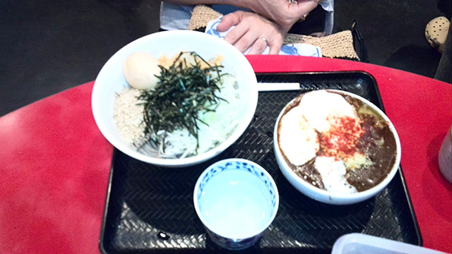

きっかけは、テレビ
塾の講師という仕事は休みが少ないものですが、夏休みにはそこそこまとめて休むことができます。
とは言え、休みが出来たから普段出来ない何かをするというわけでもなく、出不精な私はその日の気分に任せて日々を過ごすのが定番となっています。
そんな私が少しだけいつもと違う行動をしました。
職場の女性スタッフを誘って都内へ‘めしツアー’を企画したのです。
どちらかと言うと、何かを企画するよりもそれに乗っかる方が好きな私。
しかも女性を誘うとなると気も遣うし…みたいな思考が行動を抑制していました。
そんなときテレビで見た特集で、女性レポーターによる人気の食事○○ナンバー１とかいうものに輝いていたのが、池袋にある「壬生（みぶ）」という店の「黒カレー肉そば」というメニューでした。
これがなかなか美味しそう。カレーにそばをつけて食べるという斬新さだけでなく、カレー自体もマスカルポーネチーズや生クリームで仕上げたイタリアンテイストなものになっています。
これは食べに行きたいな、ということで職場のお姉さま方４人を誘い、夜の池袋に繰り出したのでした。
で、これがその写真。

結論から言うと、とても美味しかったです！
お姉さま方も大満足でした。
値段をそのままに量を小・中・大の３つから選ぶことができまして、私は大を頼みましたが、あやうく残してしまうほどのボリュームでした。
どんなにおなかが空いていたとしても、女性なら中で十分です（ちなみに写真は小）。
夏休みに最も遠出をしたのは、この日でした（笑）。
まあ、休みになるとどこかに行かなければみたいな義務感を感じず、気の向くままに行動するのがいいですよね。女性を誘っての企画をすること自体が珍しいことこの上ないのですが、これも歳をとったことによる心境の変化か…。
また近々お姉さま方との‘めしツアー’に行きますので、またご報告します。
餅は餅屋
この夏（正確には休みに入る直前ですが）、もう一つちょっとした出来事が。
まあ、あまり聞きたくない人はこの先はスルーして下さい。
簡単に言うと、「出血が止まらない」状態になりました。
内股にイボがありまして、自分で切り取ってしまったんです！（アイテムはハサミ）
イボ自体も傷口も大した大きさではなかったのですが、ダラダラと出血が止まらず、ついに１０時間ほど止まることはなく徹夜＆貧血という事態に（泣）。
その日は特訓授業が朝からあったのですが、急遽クラスを合同にして庄本氏の授業を先にまとめてやってもらう対処をしました。
結果としてお昼前には何とか血が止まり、午後の授業はできました。
教訓：餅は餅屋！
皆さん、私の二の舞にならぬようお気をつけ下さい。
ちゃんとお医者さんで取ってもらってくださいね。